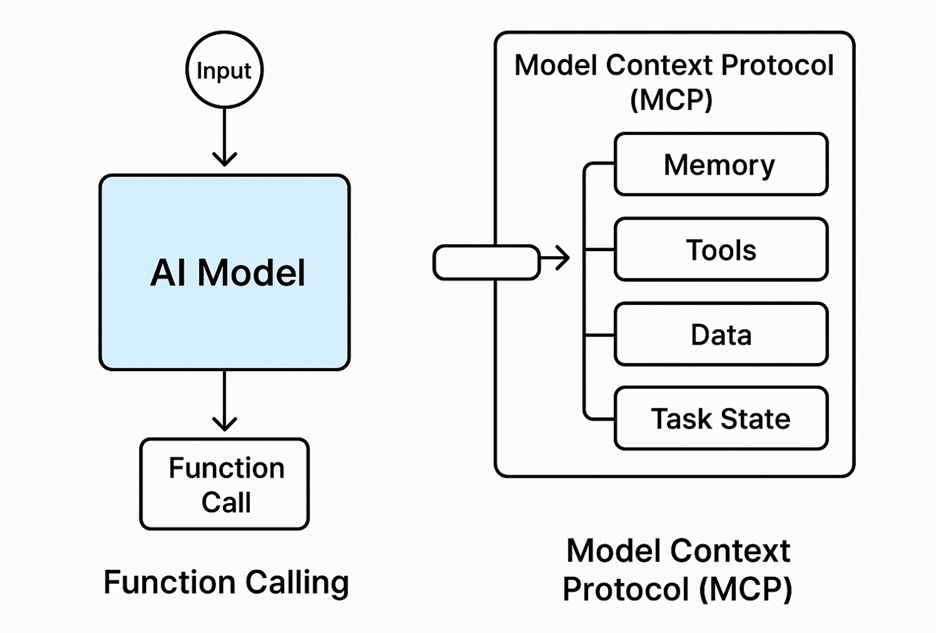

MCP as a foundational layer of the AI-native internet
"What websites were to human users, MCP servers will be to autonomous agents."
I believe this is not only plausible but strategically inevitable, particularly as we transition from human-centric UX to agent-centric APIs, with autonomous AI agents acting on our behalf to plan, decide, transact, and operate.
In the same way websites transformed how businesses interact with human users, Model Context Protocol (MCP) servers are poised to become the foundational interface for AI agents. As enterprises prepare for an era of autonomous, agent-driven transactions, hosting MCP endpoints will not be optional, it will be essential. This point of view outlines why enterprises should treat MCP as a first-class interface layer, how it differs from traditional APIs, and what strategic advantages it unlocks in the agentic economy.
In this evolution, MCP represents the agent-native interface that standardizes how agents understand, interact with, and persist stateful tasks across businesses.
Model Context Protocol (MCP) is a machine-readable, task-oriented interface specification designed to:
|
Human UX Web Stack |
Agent UX Stack |
|
HTML/CSS |
MCP Schema / JSON Context |
|
Web Pages |
Tasks + Context Objects |
|
JavaScript APIs |
Function APIs / Tool Hooks |
|
SEO / Sitemap |
Schema Registry / MCP Directory |
|
OAuth for users |
Token Auth for Agents |
MCP servers become the programmable front door for agents just as websites were for humans.
A travel agent AI (e.g., a personal assistant agent) wants to:
Instead of scraping websites or reverse-engineering APIs, the agent interacts with:
GET https://mcp.united.com/context/flight-planner
POST https://mcp.united.com/task/create
MCP enables stateful, secure, explainable interactions.
Forward-thinking enterprises must:
The MCP server is the next logical interface layer in digital transformation. What the website was to users, the MCP endpoint will be to autonomous agents. Enterprises that embrace this shift will gain an early-mover advantage in automation, interoperability, and digital trust.
In the future, every serious business will have an MCP interface. The question is not if, but when.
Here are a few extras
Function calling in LLMs (like OpenAI's function_call or Anthropic, s tool use) was introduced to bridge the gap between language models and external tools or systems.
At a glance, Model Context Protocol (MCP) might seem like an extension of that. However, they serve different scopes, and understanding these differences is key to building enterprise-grade AI systems.
|
Aspect |
Function Calling |
Model Context Protocol (MCP) |
|
Scope |
Micro (per-call/tool-level) |
Macro (system-wide, multi-agent, persistent) |
|
Purpose |
Invoke a tool or API from within a model |
Provide structured, evolving context across model sessions, agents, and systems |
|
Data Flow |
One-off, model → tool |
Bidirectional, model ↔ tool/data layer/system memory |
|
State Awareness |
Stateless or limited to session |
Stateful, maintains long-term shared context |
|
Interoperability |
Bound to model-specific APIs |
Protocol-agnostic, designed for standardization across platforms |
|
Typical Use Case |
"GetWeather(city)" in response to prompt |
Agent accesses sales data, internal docs, workflows, task plans over hours/days |
|
Standardization |
Proprietary (OpenAI, Anthropic-specific) |
Open standard initiative (e.g., via Anthropic and partners) |
